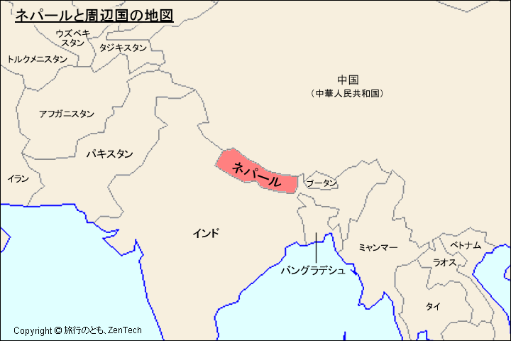
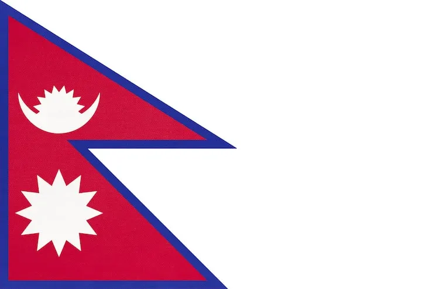

ネパール カルチャー ショー
へよこそ
目次
前半: ２時間
- プレゼンテーション
- ネパール語のミニ授業
- クイズ
- ビー玉大会
後半: １時間
- ネパール音楽紹介
- ネパール料理体験
ネパールへようこそ
ネパールは、ヒマラヤ山脈に囲まれた南アジアの国です。
エベレストや豊かな文化で知られています。
どこにある？

ネパール
ー インド
ー 中国
2つの大きな国の間にあります。
ネパールの国旗

他の国と違って、２つの三角形で作られています。
ー 太陽
ー 月
が特徴です。
ネパールの料理
ネパールには、たくさんの伝統料理があります。
まずは．．．
モモ

ネパールで人気の餃子料理。
ダルバート
豆料理とご飯を中心にした代表的な食事
セルロティ
米から作る伝統的なリング状の料理。
ネパール語
नेपाल दक्षिण एसियामा रहेको एक सुन्दर देश हो। यहाँ हिमाल, हरिया पहाड र धेरै प्रकारका संस्कृतिहरू पाइन्छन्। संसारको सबैभन्दा अग्लो हिमाल सगरमाथा पनि नेपालमै अवस्थित छ। नेपाल आफ्नो प्राकृतिक सुन्दरता, परम्परा र विविधताका लागि प्रसिद्ध छ।
これは「ネパール語」です。
ネパール語はデーヴァナーガリー文字で書きます。
首都：カトマンズ
カトマンズ
ネパールの首都。
歴史ある寺院や伝統的な建築で有名です。
ネパールについてのクイズ
リンク
ネパールの知識を試してみよう！
ネパール語を学ぼう
ネパール語で簡単な会話をしてみましょう。
こんにちは
नमस्ते ナマステ Namaste こんにちは
ありがとう
धन्यवाद ダンニャバード Dhanyabad ありがとう
自己紹介
मेरो नाम ___ हो। メロ ナーム ___ ホ Mero naam ___ ho 私の名前は ___ です。
名前を聞いてみよう
तपाईंको नाम के हो? タパイン コ ナーム ケ ホ Tapai ko naam ke ho? あなたの名前は何ですか？
会話してみよう
A: नमस्ते। ナマステ。 Namaste. B: नमस्ते। ナマステ。 Namaste. A: तपाईंको नाम के हो? タパイン コ ナーム ケ ホ Tapai ko naam ke ho? B: मेरो नाम ___ हो। メロ ナーム ___ ホ Mero naam ___ ho.
便利な言葉
पानी パーニ Paani 水 खाना カーナ Khana ご飯 साथी サーティ Saathi 友達
ネパール語クイズ
リンク今まで習ったネパール語を使ってみましょう！